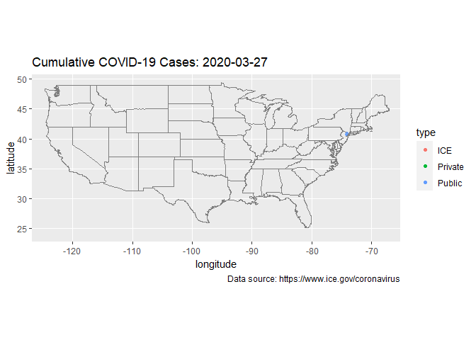
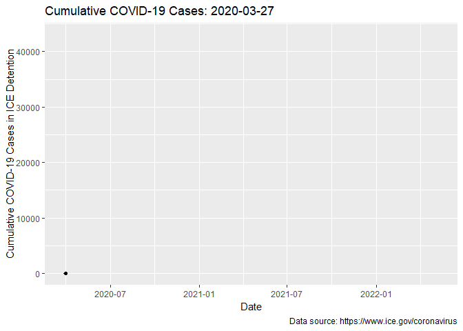
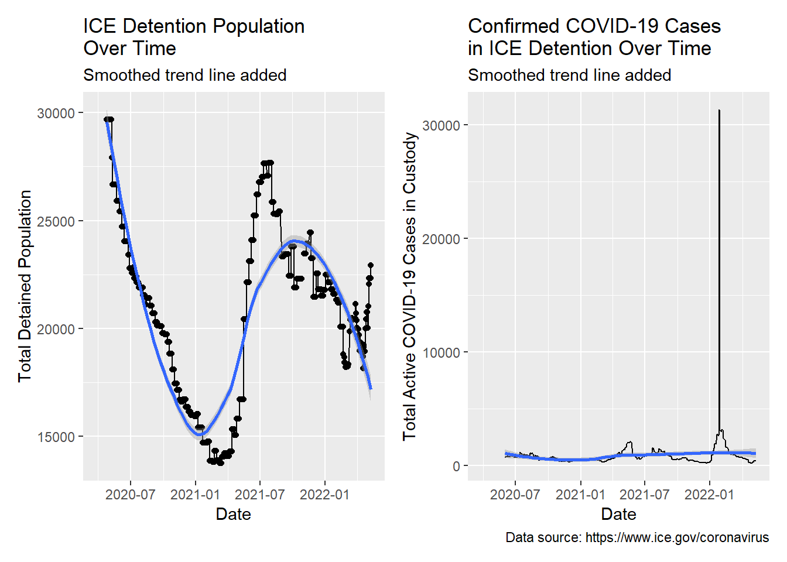
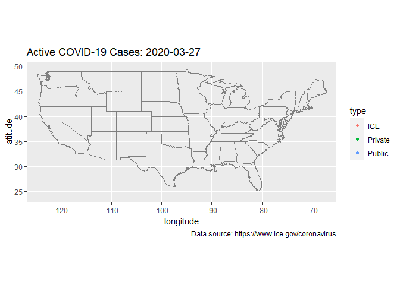

ICE Detention COVID-19 Maps
Animated visualizations of COVID-19 infections in ICE detention over time.
COVID-19 Cases in ICE Detention Over Time
The following maps and graph are generated with data scraped from the ICE Guidance on COVID-19 website. The scraped data are maintained in a GitHub repository. COVID-19 data reported by ICE are linked with geocoded facility locations. COVID-19 data are assembled in “long” format, plotted with ggplot (Wickham et al. 2021), and animated with the gganimate (Pedersen and Robinson 2020) library.
Cumulative COVID-19 Map
A map of cumulative COVID-19 cases by ICE detention facility over time.

Cumulative COVID-19 Line Plot

Total Detained and Active Cases Line Plot Over Time
The following is a pair of line plots showing detained population and active COVID-19 cases in custody over time. Comparing the plots one can see that between July and January 2020 as the detained population decreased the number of active COVID-19 cases in custody declined. Likewise, one can see that in late March 2021 as the total detained population began to rise the number of active COVID-19 cases in custody also rose and that by April 2021 both the detained population and active COVID-19 cases in ICE detention are rising rapidly.

Active COVID-19 Map
A map of active COVID-19 cases by ICE detention facility over time.
